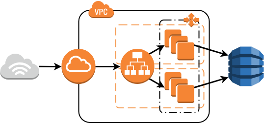

| AWS SIMLET |
|

A junior cloud developer is trying to set up a web service solution as visualised by the figure above. The developer has created a web application in Node.js. The web application is deployed automatically across a fleet of EC2 Auto Scaling instances running Amazon Linux 2. An Elastic Load Balancer is configured to load balance between the instances. The web applications state is stored in a DynamoDB table named WebServerDB. The web application follows AWS Security Best Practices in regards to how it receives credentials for accessing DynamoDB. When testing the solution, the developer notice that the web application can not access DynamoDB properly. The web application crashes whenever it tries to insert items into the WebServerDB-table. However, reading from the table work without any issues. Below is an AWS-shell connected to the infrastructure: Copyright 2018 (C) Christian Åberg
---------------------------------- aws>
Use the shell above to determine the cause of the web applications issues with DynamoDB. What is the most likely reason for the problems? The administrator needs to change the active role for the EC2 instances. The instances security group is dropping DynamoDB packets. The Auto Scaling Groups Launch Configuration contains an IamInstanceProfile with insufficient permissions. The administrator needs to increase the WriteCapacityUnits of the WebServerDB-table in DynamoDB The administrator needs to increase the WriteCapacityUnits of the VerySecretTable-table in DynamoDB |